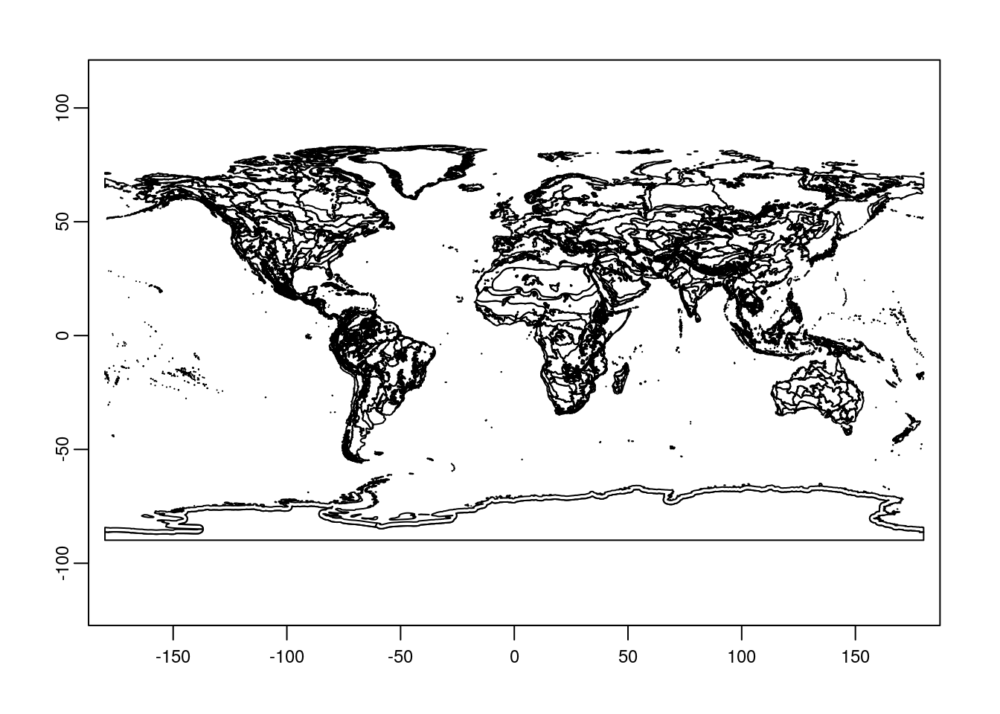
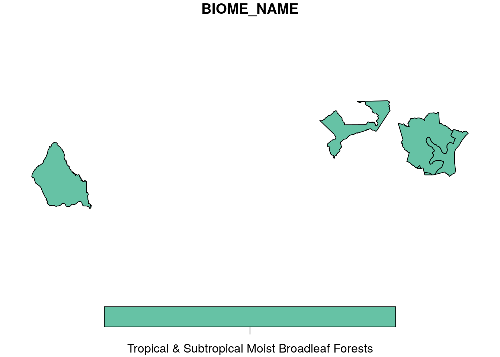
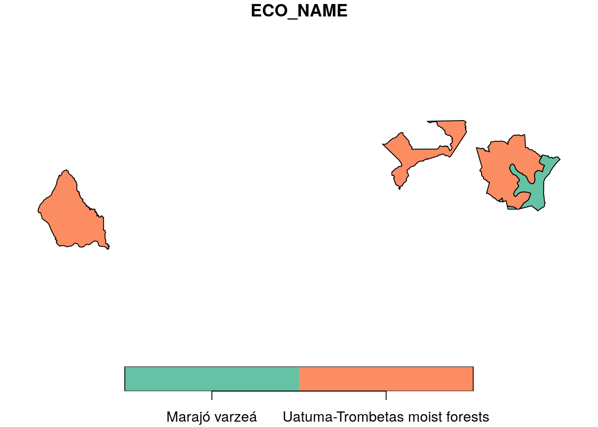

Processing Terrestrial Ecoregions of the World(TEOW)
Om Prakash Bhandari (Author), Johannes Schielein (Review)
3/12/2021
Last updated: 2021-09-15
Checks: 7 0
Knit directory: mapme.protectedareas/
This reproducible R Markdown analysis was created with workflowr (version 1.6.2). The Checks tab describes the reproducibility checks that were applied when the results were created. The Past versions tab lists the development history.
Great! Since the R Markdown file has been committed to the Git repository, you know the exact version of the code that produced these results.
Great job! The global environment was empty. Objects defined in the global environment can affect the analysis in your R Markdown file in unknown ways. For reproduciblity it’s best to always run the code in an empty environment.
The command set.seed(20210305) was run prior to running the code in the R Markdown file. Setting a seed ensures that any results that rely on randomness, e.g. subsampling or permutations, are reproducible.
Great job! Recording the operating system, R version, and package versions is critical for reproducibility.
Nice! There were no cached chunks for this analysis, so you can be confident that you successfully produced the results during this run.
Great job! Using relative paths to the files within your workflowr project makes it easier to run your code on other machines.
Great! You are using Git for version control. Tracking code development and connecting the code version to the results is critical for reproducibility.
The results in this page were generated with repository version 2fc3683. See the Past versions tab to see a history of the changes made to the R Markdown and HTML files.
Note that you need to be careful to ensure that all relevant files for the analysis have been committed to Git prior to generating the results (you can use wflow_publish or wflow_git_commit). workflowr only checks the R Markdown file, but you know if there are other scripts or data files that it depends on. Below is the status of the Git repository when the results were generated:
Ignored files:
Ignored: .RData
Ignored: .Rhistory
Ignored: .Rproj.user/
Ignored: data-raw/addons/docs/rest/
Ignored: data-raw/addons/etc/
Ignored: data-raw/addons/scripts/
Untracked files:
Untracked: .tmp/
Note that any generated files, e.g. HTML, png, CSS, etc., are not included in this status report because it is ok for generated content to have uncommitted changes.
These are the previous versions of the repository in which changes were made to the R Markdown (analysis/wwf_teow.rmd) and HTML (docs/wwf_teow.html) files. If you’ve configured a remote Git repository (see ?wflow_git_remote), click on the hyperlinks in the table below to view the files as they were in that past version.
| File | Version | Author | Date | Message |
|---|---|---|---|---|
| html | d1cfe2d | Johannes Schielein | 2021-09-15 | initial comit with sampling code |
| Rmd | b589068 | Ohm-Np | 2021-07-03 | update author names, urls & source code description |
| html | 1468f42 | Ohm-Np | 2021-07-03 | update html files |
| html | fa42f34 | Johannes Schielein | 2021-07-01 | Host with GitHub. |
| html | 8bd1321 | Johannes Schielein | 2021-06-30 | Host with GitLab. |
| html | 3a39ee3 | Johannes Schielein | 2021-06-30 | Host with GitHub. |
| html | ae67dca | Johannes Schielein | 2021-06-30 | Host with GitLab. |
| Rmd | 29a1271 | Om Bandhari | 2021-06-30 | update teow rmd analysis |
| html | a579dc4 | Om Bandhari | 2021-06-30 | update teow html for index rmd |
| Rmd | 6637f1d | Johannes Schielein | 2021-03-16 | updates to the the wwf routine |
| html | 6637f1d | Johannes Schielein | 2021-03-16 | updates to the the wwf routine |
| Rmd | 45f3a67 | Ohm-Np | 2021-03-16 | add biomes name column & slight modifications |
| html | 45f3a67 | Ohm-Np | 2021-03-16 | add biomes name column & slight modifications |
| Rmd | 0a7f686 | Johannes Schielein | 2021-03-15 | updated teow workflow |
| html | 0a7f686 | Johannes Schielein | 2021-03-15 | updated teow workflow |
| Rmd | c93be45 | Johannes Schielein | 2021-03-15 | update to teow routine |
| Rmd | b548133 | Ohm-Np | 2021-03-15 | create wwf teow rmd |
| html | b548133 | Ohm-Np | 2021-03-15 | create wwf teow rmd |
# load required libraries
library("sf")
library("terra")
library("wdpar")
library("dplyr")
library("rmarkdown") # only used for rendering tables for this website
starttime<-Sys.time() # mark the starttime of this routine to calculate processing time at the endIntroduction
Terrestrial Ecoregions of the World (TEOW) is a biogeographic regionalization of the Earth’s terrestrial biodiversity. The biogeographic units are ecoregions, which are defined as relatively large units of land or inland water containing a distinct assemblage of natural communities sharing a large majority of species, dynamics, and environmental conditions. There are 867 terrestrial ecoregions, classified into 14 different terrestrial biomes such as forests, grasslands, or deserts. Ecoregions represent the original distribution of distinct assemblages of species and communities. The biome is more concrete aggregation of the organisms classified according to their adaptation to the environment in which they exist.
Visit Link for more information on TEOW from WWF.
Datasource and Metadata Information
- Dataset: Terrestrial Ecoregions of the World - World Wildlife Fund [1]
- Geographical Coverage: Global
- Temporal Coverage: 2001
- Temporal Resolution: Cross-sectional
- Unit: hectare
- Data downloaded: 15th March, 2021
- Metadata Link
- Download Link
Here we are going to carry out an analysis that intersects WDPA polygons with the Ecoregions to calculate the area of different ecoregions and biomes within supported PAs.
Processing Workflow
To carry out this analysis, we will follow this processing routine:

Download and prepare WDPA polygons
First of all, we will try to get the country level polygon data from wdpar package. wdpar is a library to interface to the World Database on Protected Areas (WDPA). The library is used to monitor the performance of existing PAs and determine priority areas for the establishment of new PAs. We will use Brazil - for other countries of your choice, simply provide the country name or the ISO3 name e.g. GY for Guyana, COL for Colombia
# fetch the raw data from wdpar of country Brazil
br_wdpa_raw <-
wdpa_fetch("Brazil")Since there are more than 3000 enlisted protected areas in Brazil, we will demonstrate this routine using only three wdpa polygons: - Reserva Biologica Do Rio Trombetas - wdpaid 43, - Reserva Extrativista Rio Cajari - wdpaid 31776, and - Estacao Ecologica Do Jari - wdpaid 4891
For this, we have to subset the country level polygon data to the PAs level.
# subset three wdpa polygons by their wdpa ids
br_wdpa_subset<-
br_wdpa_raw%>%
filter(WDPAID %in% c(43,4891,31776))
# plot the selected polygons
plot(br_wdpa_subset[1])
Prepare TEOW polygons
Since, we prepared WDPA polygon data for our analysis, we now load the TEOW global geopackage layer from archived file. Here we are using the validated geopackage from TEOW. The function st_make_valid removes the invalid geometry within the polygons, which was already applied to our teow geopackage, so no need to use this function in this analysis.
# load TEOW global polygons as spatVector
teow <-
vect("../../datalake/mapme.protectedareas/input/teow/Terrestrial_Ecoregions_World_validated.gpkg")
# plot the teow polygon
plot(teow)
Intersect TEOW and WDPA Polygon layer
To analyse how much of wdpa area is within which part of the ecoregion, it is necessary to carry out intersection of the polygons. For this, the function st_intersection from sf is applied. To be able to apply st_intersection, the polygon layers should be provided as an object with the sf class. To carry out intersection function, coordinate reference system of both the polygons should be harmonized. We then compare the number of polygons in both the original and the resulting WDPA layer to see whether our process split up any polygon from the intersection.
Note We first loaded the teow polygon as spatVector so that there won’t be issue with missing CRS. But, to be able to apply st_intersection it is necessary to convert spatVector object to the sf object
# convert from terra object to sf object
teow <-
st_as_sf(teow)
# apply intersection
teow_wdpa_intersection <-
st_intersection(teow,
br_wdpa_subset)although coordinates are longitude/latitude, st_intersection assumes that they are planar# plot the biome - intersected polygon
plot(teow_wdpa_intersection[20])
| Version | Author | Date |
|---|---|---|
| b14c7b7 | Ohm-Np | 2021-07-03 |
| fa42f34 | Johannes Schielein | 2021-07-01 |
| 8bd1321 | Johannes Schielein | 2021-06-30 |
| 3a39ee3 | Johannes Schielein | 2021-06-30 |
| ae67dca | Johannes Schielein | 2021-06-30 |
| 4f41952 | Om Bandhari | 2021-06-30 |
| 6637f1d | Johannes Schielein | 2021-03-16 |
| 45f3a67 | Ohm-Np | 2021-03-16 |
| 0a7f686 | Johannes Schielein | 2021-03-15 |
| b548133 | Ohm-Np | 2021-03-15 |
# plot the ecoregion - intersected polygon
plot(teow_wdpa_intersection[5])
# compare the number of polygons in both layers
nrow(br_wdpa_subset)[1] 3nrow(teow_wdpa_intersection)[1] 4We can see that there is one intersection in the research area i.e that we now have four polygons whereas before the intersection we had only three.
Calculate Areas
Since, we already carry out the intersection, now we want to extract the actual area of intersection between wdpa polygons and teow polygons.
# extract areas (SqKm) and save it as new column
teow_wdpa_intersection$teow_intersect_sqkm <-
st_area(teow_wdpa_intersection)/1000000
# tibble - turns existing object to tibble dataframe from library `dplyr`
myData <-
as_tibble(teow_wdpa_intersection)
# select only necessary columns from the intersected polygon
myData_f <- myData %>%
select(WDPAID,
BIOME_NAME,
ECO_NAME,
teow_intersect_sqkm)In the end we are going to have a look how long the rendering of this file took so that we could get an idea about the processing speed of this routine.
stoptime<-Sys.time()
print(starttime-stoptime)Time difference of -45.62403 secsReferences
[1] Olson, D. M., Dinerstein, E., Wikramanayake, E. D., Burgess, N. D., Powell, G. V. N., Underwood, E. C., D’Amico, J. A., Itoua, I., Strand, H. E., Morrison, J. C., Loucks, C. J., Allnutt, T. F., Ricketts, T. H., Kura, Y., Lamoreux, J. F., Wettengel, W. W., Hedao, P., Kassem, K. R. 2001. Terrestrial ecoregions of the world: a new map of life on Earth. Bioscience 51(11):933-938.
sessionInfo()R version 3.6.3 (2020-02-29)
Platform: x86_64-pc-linux-gnu (64-bit)
Running under: Ubuntu 18.04.5 LTS
Matrix products: default
BLAS: /usr/lib/x86_64-linux-gnu/blas/libblas.so.3.7.1
LAPACK: /usr/lib/x86_64-linux-gnu/lapack/liblapack.so.3.7.1
locale:
[1] LC_CTYPE=C.UTF-8 LC_NUMERIC=C LC_TIME=C.UTF-8
[4] LC_COLLATE=C.UTF-8 LC_MONETARY=C.UTF-8 LC_MESSAGES=C.UTF-8
[7] LC_PAPER=C.UTF-8 LC_NAME=C LC_ADDRESS=C
[10] LC_TELEPHONE=C LC_MEASUREMENT=C.UTF-8 LC_IDENTIFICATION=C
attached base packages:
[1] stats graphics grDevices utils datasets methods base
other attached packages:
[1] rmarkdown_2.6 dplyr_1.0.6 wdpar_1.0.6 terra_1.2-15 sf_0.9-8
loaded via a namespace (and not attached):
[1] tidyselect_1.1.1 xfun_0.24 purrr_0.3.4 lattice_0.20-44
[5] vctrs_0.3.8 generics_0.1.0 htmltools_0.5.1.1 yaml_2.2.1
[9] utf8_1.2.1 rlang_0.4.11 e1071_1.7-7 later_1.2.0
[13] pillar_1.6.0 glue_1.4.2 DBI_1.1.1 rappdirs_0.3.3
[17] sp_1.4-5 lifecycle_1.0.0 stringr_1.4.0 workflowr_1.6.2
[21] raster_3.4-13 codetools_0.2-18 evaluate_0.14 knitr_1.30
[25] httpuv_1.6.1 curl_4.3.2 class_7.3-19 fansi_0.5.0
[29] Rcpp_1.0.7 KernSmooth_2.23-20 promises_1.2.0.1 classInt_0.4-3
[33] lwgeom_0.2-6 jsonlite_1.7.2 countrycode_1.2.0 fs_1.5.0
[37] digest_0.6.27 stringi_1.6.2 grid_3.6.3 rprojroot_2.0.2
[41] tools_3.6.3 magrittr_2.0.1 proxy_0.4-26 tibble_3.1.1
[45] crayon_1.4.1 whisker_0.4 pkgconfig_2.0.3 ellipsis_0.3.2
[49] assertthat_0.2.1 httr_1.4.2 R6_2.5.0 units_0.7-1
[53] git2r_0.28.0 compiler_3.6.3